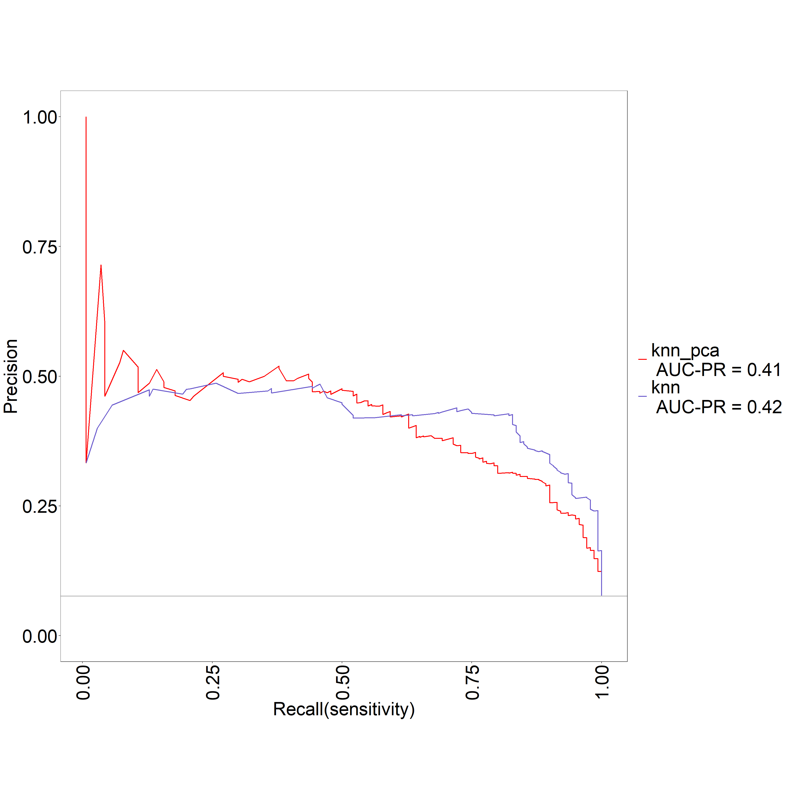

K Nearest Neighbors - KNN
library(class)
library(dplyr)##
## Attaching package: 'dplyr'## The following objects are masked from 'package:stats':
##
## filter, lag## The following objects are masked from 'package:base':
##
## intersect, setdiff, setequal, unionlibrary(caret)## Loading required package: lattice## Loading required package: ggplot2library (ROCR)
source("funcs.R")Cargamos los datos que utilizaremos para el entrenamiento, el test y la validación:
dataTrain <- readRDS("datasetTrain.csv")
dataTest <- readRDS("datasetTest.csv")
dataValidation <- readRDS("datasetValidation.csv")Procedemos a despejar de los dataset la variable objetivo original SalePrice. De la cual creamos la variable GrupoPrecio, del tipo categorica.
dataTrain <- dataTrain %>% dplyr::select(-SalePrice)
dataTest <- dataTest %>% dplyr::select(-SalePrice)
dataValidation <- dataValidation %>% dplyr::select(-SalePrice)
group <- c('TotalSF','LotArea','GrLivArea','GrupoPrecio')
dataTrain <- dataTrain %>% dplyr::select(group)
dataTest <- dataTest %>% dplyr::select(group)
dataValidation <- dataValidation %>% dplyr::select(group)A continuación preparamos los dataset para entrenar el modelo y posteriormente evaluar como se comporta con el conjunto de test y finalmente con el grupo de validación.
XTrain <- dataTrain %>% dplyr::select(-GrupoPrecio)
YTrain <- dataTrain$GrupoPrecio
XTest <- dataTest %>% dplyr::select(-GrupoPrecio)
YTest <- dataTest$GrupoPrecio
XValidation <- dataValidation %>% dplyr::select(-GrupoPrecio)
YValidation <- dataValidation$GrupoPreciomodel <- knn(XTrain, XTest, cl = YTrain, k=1)tab_test <- table(model, YTest, dnn = c("Actual", "Predichos"))
(tab_test)## Predichos
## Actual Barato Normal Caro
## Barato 712 33 1
## Normal 30 8 1
## Caro 2 1 0accuracy(tab_test)## [1] 91.37056knn_test_error <- calc_error_rate(predicted.value=model, true.value=YTest)
(knn_test_error)## [1] 0.08629442draw_confusion_matrix(tab_test, "Actual", "Predichos")cm <- confusionMatrix(tab_test)
(cm)## Confusion Matrix and Statistics
##
## Predichos
## Actual Barato Normal Caro
## Barato 712 33 1
## Normal 30 8 1
## Caro 2 1 0
##
## Overall Statistics
##
## Accuracy : 0.9137
## 95% CI : (0.8919, 0.9324)
## No Information Rate : 0.9442
## P-Value [Acc > NIR] : 0.9998
##
## Kappa : 0.1663
##
## Mcnemar's Test P-Value : 0.9241
##
## Statistics by Class:
##
## Class: Barato Class: Normal Class: Caro
## Sensitivity 0.9570 0.19048 0.000000
## Specificity 0.2273 0.95845 0.996183
## Pos Pred Value 0.9544 0.20513 0.000000
## Neg Pred Value 0.2381 0.95461 0.997452
## Prevalence 0.9442 0.05330 0.002538
## Detection Rate 0.9036 0.01015 0.000000
## Detection Prevalence 0.9467 0.04949 0.003807
## Balanced Accuracy 0.5921 0.57446 0.498092Obtemos el hiperparametro k (el numero de vecinos que determinaran la clase que predice el modelo), probando una series de valores y evaluando cual da una accuary mayor.
i <- 1
k <- 1
for(i in 1:28){
model <- knn(XTrain, XTest, cl = YTrain, k=i)
tab_test <- table(model, YTest, dnn = c("Actual", "Predichos"))
k[i] <- accuracy(tab_test)
opt <- i
cat(opt, '=', k[i], '')
}## 1 = 91.37056 2 = 92.00508 3 = 91.87817 4 = 91.87817 5 = 92.63959 6 = 92.7665 7 = 93.78173 8 = 93.90863 9 = 94.41624 10 = 94.16244 11 = 94.54315 12 = 94.54315 13 = 94.79695 14 = 94.54315 15 = 94.41624 16 = 94.54315 17 = 94.41624 18 = 94.28934 19 = 94.79695 20 = 94.28934 21 = 94.41624 22 = 94.54315 23 = 94.54315 24 = 94.54315 25 = 94.54315 26 = 94.54315 27 = 94.41624 28 = 94.41624plot(k, type="b", xlab="K-Value", ylab="Accuracy level")
(k)## [1] 91.37056 92.00508 91.87817 91.87817 92.63959 92.76650 93.78173 93.90863
## [9] 94.41624 94.16244 94.54315 94.54315 94.79695 94.54315 94.41624 94.54315
## [17] 94.41624 94.28934 94.79695 94.28934 94.41624 94.54315 94.54315 94.54315
## [25] 94.54315 94.54315 94.41624 94.41624Una vez obtenida la k más optima podemos ver que el modelo funciona mejor.
model <- knn(XTrain, XTest, cl = YTrain, k=13)tab_test <- table(model, YTest, dnn = c("Actual", "Predichos"))
(tab_test)## Predichos
## Actual Barato Normal Caro
## Barato 741 37 2
## Normal 3 5 0
## Caro 0 0 0draw_confusion_matrix(tab_test, "Actual", "Predichos")
accuracy(tab_test)## [1] 94.67005knn_test_error <- calc_error_rate(predicted.value=model, true.value=YTest)
(knn_test_error)## [1] 0.05329949cm <- confusionMatrix(tab_test)
(cm)## Confusion Matrix and Statistics
##
## Predichos
## Actual Barato Normal Caro
## Barato 741 37 2
## Normal 3 5 0
## Caro 0 0 0
##
## Overall Statistics
##
## Accuracy : 0.9467
## 95% CI : (0.9286, 0.9613)
## No Information Rate : 0.9442
## P-Value [Acc > NIR] : 0.4165
##
## Kappa : 0.1785
##
## Mcnemar's Test P-Value : NA
##
## Statistics by Class:
##
## Class: Barato Class: Normal Class: Caro
## Sensitivity 0.9960 0.119048 0.000000
## Specificity 0.1136 0.995979 1.000000
## Pos Pred Value 0.9500 0.625000 NaN
## Neg Pred Value 0.6250 0.952564 0.997462
## Prevalence 0.9442 0.053299 0.002538
## Detection Rate 0.9404 0.006345 0.000000
## Detection Prevalence 0.9898 0.010152 0.000000
## Balanced Accuracy 0.5548 0.557513 0.500000Utilizamos el conjunto de validación para comprobar nuestro modelo.
model <- knn(XTrain, XValidation, cl = YTrain, k=13)tab_validation <- table(model, YValidation, dnn = c("Actual", "Predichos"))
(tab_validation)## Predichos
## Actual Barato Normal Caro
## Barato 273 13 1
## Normal 2 2 0
## Caro 0 0 0draw_confusion_matrix(tab_validation, "Actual", "Predichos")
accuracy(tab_validation)## [1] 94.50172knn_validation_error <- calc_error_rate(predicted.value=model, true.value=YValidation)
(knn_validation_error)## [1] 0.05498282cm <- confusionMatrix(tab_validation)
(cm)## Confusion Matrix and Statistics
##
## Predichos
## Actual Barato Normal Caro
## Barato 273 13 1
## Normal 2 2 0
## Caro 0 0 0
##
## Overall Statistics
##
## Accuracy : 0.945
## 95% CI : (0.9122, 0.9682)
## No Information Rate : 0.945
## P-Value [Acc > NIR] : 0.566
##
## Kappa : 0.1826
##
## Mcnemar's Test P-Value : NA
##
## Statistics by Class:
##
## Class: Barato Class: Normal Class: Caro
## Sensitivity 0.9927 0.133333 0.000000
## Specificity 0.1250 0.992754 1.000000
## Pos Pred Value 0.9512 0.500000 NaN
## Neg Pred Value 0.5000 0.954704 0.996564
## Prevalence 0.9450 0.051546 0.003436
## Detection Rate 0.9381 0.006873 0.000000
## Detection Prevalence 0.9863 0.013746 0.000000
## Balanced Accuracy 0.5589 0.563043 0.500000